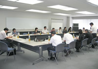

【日 時】
８月２日（木）13:30～15:45
【場 所】
さいたま新都心合同庁舎２号館５階
【出席人数】
消費者団体：10人（埼玉消団連、県婦連、埼玉県生協連、生協ネットワーク協議会、コーペル、ドゥコープ）
関東農政局：７人
１．鈴木関東農政局消費・安全部長のあいさつ
昨年度までは「食の安全・安心消費者セミナー」として行ってまいりましたが、名称も「消費者団体との意見交換会」と変更し、意見交換をより充実させていきたいと思います。
２．説明
（１）バイオマスの利活用について
（２）野菜の緊急需給調整について
（３）食品表示の最近の動きについて
（４）食品の安全管理に関する最近の動きについて
（５）食育に関する最近の動きについて
３．意見交換（○は主な意見・質問、→は答え）
○
バイオマスタウン構想の絵を見ると発電もまかなっているようですが、化石燃料での発電のどれくらいをカバーできるものなのでしょうか？
→
化石燃料の発電に比べると効率はまだまだ低くこれからの研究課題です。バイオマス発電だけではとても賄えないので、その他の新エネルギー、省エネルギーと組み合わせて行っていくような方向です。
○
遺伝子組換えの食品への混入は現在５％まで認められていますが、下げるような検討はされているのでしょうか？
→
現在検討するような話は聞いていません。
○
「やさいのひみつ」という子ども向けの冊子は良くできていますが、学校の副読本などに利用されたりしているのでしょうか？
→
特に学校に配布はしていませんが、(独)農畜産業振興機構のホームページに載せています。また、各種のイベントなどで配布しています。
○
最新の資料の提供や説明は勉強にはなりますが、以前いただいた情報は省略する等進行に工夫してもらい、今後は意見交換の時間を充分とっていただきたい。
以上の他にも活発に意見が出されました。
埼玉県消費者団体連絡会トップ